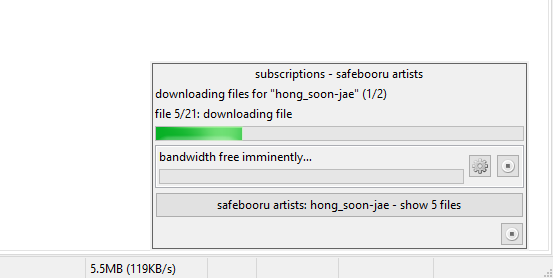

Do not try to create a subscription until you are comfortable with a normal gallery download page! Go here.
Let's say you found an artist you like. You downloaded everything of theirs from some site, but one or two pieces of new work is posted every week. You'd like to keep up with the new stuff, but you don't want to manually make a new download job every week for every single artist you like.
what are subs?
Subscriptions are a way of telling the client to regularly and quietly repeat a gallery search. You set up a number of saved queries, and the client will 'sync' with the latest files in the gallery and download anything new, just as if you were running the download yourself.
Subscriptions only work for booru-like galleries that put the newest files first, and they only keep up with new content--once they have done their first sync, which usually gets the most recent hundred files or so, they will never reach further into the past. Getting older files, as you will see later, is a job best done with a normal download page.
Here's the dialog, which is under network->downloaders->manage subscriptions:

This is a very simple example--there is only one subscription, for safebooru. It has two 'queries' (i.e. searches to keep up with).
It is important to note that while subscriptions can have multiple queries (even hundreds!), they generally only work on one site. Expect to create one subscription for safebooru, one for artstation, one for paheal, and so on for every site you care about. Advanced users may be able to think of ways to get around this, but I recommend against it as it throws off some of the internal check timing calculations.
Before we trip over the advanced buttons here, let's zoom in on the actual subscription:

This is a big and powerful panel! I recommend you open the screenshot up in a new browser tab, or in the actual client, so you can refer to it.
Despite all the controls, the basic idea is simple: Up top, I have selected the 'safebooru tag search' download source, and then I have added two artists--"hong_soon-jae" and "houtengeki". These two queries have their own panels for reviewing what URLs they have worked on and further customising their behaviour, but all they really are is little bits of search text. When the subscription runs, it will put the given search text into the given download source just as if you were running the regular downloader.
For the most part, all you need to do to set up a good subscription is give it a name, select the download source, and use the 'paste queries' button to paste what you want to search. Subscriptions have great default options for almost all query types, so you don't have to go any deeper than that to get started.
Do not change the max number of new files options until you know exactly what they do and have a good reason to alter them!
how do subscriptions work?
Once you hit ok on the main subscription dialog, the subscription system should immediately come alive. If any queries are due for a 'check', they will perform their search and look for new files (i.e. URLs it has not seen before). Once that is finished, the file download queue will be worked through as normal. Typically, the sub will make a popup like this while it works:

The initial sync can sometimes take a few minutes, but after that, each query usually only needs thirty seconds' work every few days. If you leave your client on in the background, you'll rarely see them. If they ever get in your way, don't be afraid to click their little cancel button or call a global halt with network->pause->subscriptions--the next time they run, they will resume from where they were before.
Similarly, the initial sync may produce a hundred files, but subsequent runs are likely to only produce one to ten. If a subscription comes across a lot of big files at once, it may not download them all in one go--but give it time, and it will catch back up before you know it.
When it is done, it leaves a little popup button that will open a new page for you:

This can often be a nice surprise!
what makes a good subscription?
The same rules as for downloaders apply: start slow, be hesitant, and plan for the long-term. Artist queries make great subscriptions as they update reliably but not too often and have very stable quality. Pick the artists you like most, see where their stuff is posted, and set up your subs like that.
Series and character subscriptions are sometimes valuable, but they can be difficult to keep up with and have highly variable quality. It is not uncommon for users to only keep 15% of what a character sub produces. I do not recommend them for anything but your waifu.
Attribute subscriptions like 'blue_eyes' or 'smile' make for terrible subs as the quality is all over the place and you will be inundated by too much content. The only exceptions are for specific, low-count searches that really matter to you, like 'contrapposto' or 'gothic trap thighhighs'.
If you end up subscribing to eight hundred things and get ten thousand new files a week, you made a mistake. Subscriptions are for keeping up with things you like. If you let them overwhelm you, you'll resent them.
Subscriptions syncs are somewhat fragile. Do not try to play with the limits or checker options to download a whole 5,000 file query in one go--if you want everything for a query, run it in the manual downloader and get everything, then set up a normal sub for new stuff. There is no benefit to having a 'large' subscription, and it will trim itself down in time anyway.
It is a good idea to run a 'full' download for a search before you set up a subscription. As well as making sure you have the exact right query text and that you have everything ever posted (beyond the 100 files deep a sub will typically look), it saves the bulk of the work (and waiting on bandwidth) for the manual downloader, where it belongs. When a new subscription picks up off a freshly completed download queue, its initial subscription sync only takes thirty seconds since its initial URLs are those that were already processed by the manual downloader. I recommend you stack artist searches up in the manual downloader using 'no limit' file limit, and when they are all finished, select them in the list and right-click->copy queries, which will put the search texts in your clipboard, newline-separated. This list can be pasted into the subscription dialog in one go with the 'paste queries' button again!
The entire subscription system assumes the source is a typical 'newest first' booru-style search. If you dick around with some order_by:rating/random metatag, it will not work reliably.
how often do subscriptions check?
Hydrus subscriptions use the same variable-rate checking system as its thread watchers, just on a larger timescale. If you subscribe to a busy feed, it might check for new files once a day, but if you enter an artist who rarely posts, it might only check once every month. You don't have to do anything. The fine details of this are governed by the 'checker options' button. This is one of the things you should not mess with as you start out.
If a query goes too 'slow' (typically, this means no new files for 180 days), it will be marked DEAD in the same way a thread will, and it will not be checked again. You will get a little popup when this happens. This is all editable as you get a better feel for the system--if you wish, it is completely possible to set up a sub that never dies and only checks once a year.
I do not recommend setting up a sub that needs to check more than once a day. Any search that is producing that many files is probably a bad fit for a subscription. Subscriptions are for lightweight searches that are updated every now and then.
(you might like to come back to this point once you have tried subs for a week or so and want to refine your workflow)
ok, I set up three hundred queries, and now these popup buttons are a hassle
One the edit subscription panel, the 'presentation' options let you publish files to a page. The page will have the subscription's name, just like the button makes, but it cuts out the middle-man and 'locks it in' more than the button, which will be forgotten if you restart the client. Also, if a page with that name already exists, the new files will be appended to it, just like a normal import page! I strongly recommend moving to this once you have several subs going. Make a 'page of pages' called 'subs' and put all your subscription landing pages in there, and then you can check it whenever is convenient.
If you discover your subscription workflow tends to be the same for each sub, you can also customise the publication 'label' used. If multiple subs all publish to the 'nsfw subs' label, they will all end up on the same 'nsfw subs' popup button or landing page. Sending multiple subscriptions' import streams into just one or two locations like this can be great.
You can also hide the main working popup. I don't recommend this unless you are really having a problem with it, since it is useful to have that 'active' feedback if something goes wrong.
Note that subscription file import options will, by default, only present 'new' files. Anything already in the db will still be recorded in the internal import cache and used to calculate next check times and so on, but it won't clutter your import stream. This is different to the default for all the other importers, but when you are ready to enter the ranks of the Patricians, you will know to edit your 'loud' default file import options under options->importing to behave this way as well. Efficient workflows only care about new files.
how exactly does the sync work?
Figuring out when a repeating search has 'caught up' can be a tricky problem to solve. It sounds simple, but unusual situations like 'a file got tagged late, so it inserted deeper than it ideally should in the gallery search' or 'the website changed its URL format completely, help' can cause problems. Subscriptions are automatic systems, so they tend to be a bit more careful and paranoid about problems, lest they burn 10GB on 10,000 unexpected diaperfur images.
The initial sync is simple. It does a regular search, stopping if it reaches the 'initial file limit' or the last file in the gallery, whichever comes first. The default initial file sync is 100, which is a great number for almost all situations.
Subsequent syncs are more complicated. It ideally 'stops' searching when it reaches files it saw in a previous sync, but if it comes across new files mixed in with the old, it will search a bit deeper. It is not foolproof, and if a file gets tagged very late and ends up a hundred deep in the search, it will probably be missed. There is no good and computationally cheap way at present to resolve this problem, but thankfully it is rare.
Remember that an important 'staying sane' philosophy of downloading and subscriptions is to focus on dealing with the 99.5% you have before worrying about the 0.5% you do not.
The amount of time between syncs is calculated by the checker options. Based on the timestamps attached to existing urls in the subscription cache (either added time, or the post time as parsed from the url), the sub estimates how long it will be before n new files appear, and then next check is scheduled for then. Unless you know what you are doing, checker options, like file limits, are best left alone. A subscription will naturally adapt its checking speed to the file 'velocity' of the source, and there is usually very little benefit to trying to force a sub to check at a radically different speed.
If you want to force your subs to run at the same time, say every evening, it is easier to just use network->pause->subscriptions as a manual master on/off control. The ones that are due will catch up together, the ones that aren't won't waste your time.
Remember that subscriptions only keep up with new content. They cannot search backwards in time in order to 'fill out' a search, nor can they fill in gaps. Do not change the file limits or check times to try to make this happen. If you want to ensure complete sync with all existing content for a particular search, use the manual downloader.
In practice, most subs only need to check the first page of a gallery since only the first two or three urls are new.
periodic file limit exceeded
If, during a regular sync, the sub keeps finding new URLs, never hitting a block of already-seen URLs, it will stop upon hitting its 'periodic file limit', which is also usually 100. When it happens, you will get a popup message notification. There are two typical reasons for this:
- A user suddenly posted a large number of files to the site for that query. This sometimes happens with CG gallery spam.
- The website changed their URL format.
The first case is a natural accident of statistics. The subscription now has a 'gap' in its sync. If you want to get what you missed, you can try to fill in the gap with a manual downloader page. Just download to 200 files or so, and the downloader will work quickly to one-time work through the URLs in the gap.
The second case is a safety stopgap for hydrus. If a site decides to have /post/123456 style URLs instead of post.php?id=123456 style, hydrus will suddenly see those as entirely 'new' URLs. It could also be because of an updated downloader, which pulls URLs in API format or similar. This is again thankfully quite rare, but it triggers several problems--the associated downloader usually breaks, as it does not yet recognise those new URLs, and all your subs for that site will parse through and hit the periodic limit for every query. When this happens, you'll usually get several periodic limit popups at once, and you may need to update your downloader. If you know the person who wrote the original downloader, they'll likely want to know about the problem, or may already have a fix sorted. It is often a good idea to pause the affected subs until you have it figured out and working in a normal gallery downloader page.
I put character queries in my artist sub, and now things are all mixed up
On the main subscription dialog, there are 'merge' and 'separate' buttons. These are powerful, but they will walk you through the process of pulling queries out of a sub and merging them back into a different one. Only subs that use the same download source can be merged. Give them a go, and if it all goes wrong, just hit the cancel button on the dialog.